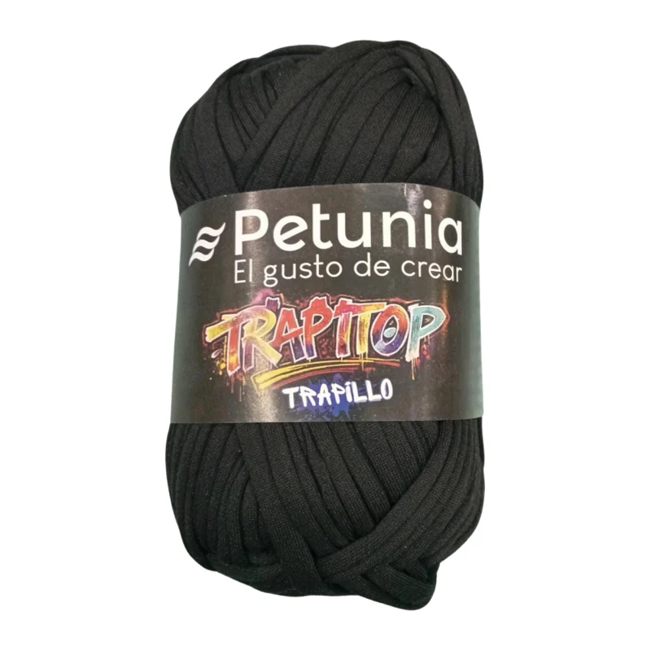

Trapillo Petunia · Marca Petunia
Trapillo Petunia Negro 100 g
Trapillo Petunia Trapitop en negro, un negro sólido y elegante. Ovillo de 100 g con 34 m, 100% poliéster y grosor grueso.
$1.700
✓ Disponible
Precio por ovillo. Contáctanos en WhatsApp: +56 9 2813 3801.
- Cinta de tela gruesa: ovillo de 100 g con 34 m
- 100% poliéster, firme y con cuerpo
- Grosor grueso: ganchillo de 9 mm o palillos de 9 mm
- El material clásico para bolsos, cestos y alfombras
- Despachos a todo Chile: compras antes de las 12:00 salen el mismo día
- Compra directa por WhatsApp con atención personalizada
- Cambios dentro de 30 días con el producto en su empaque original